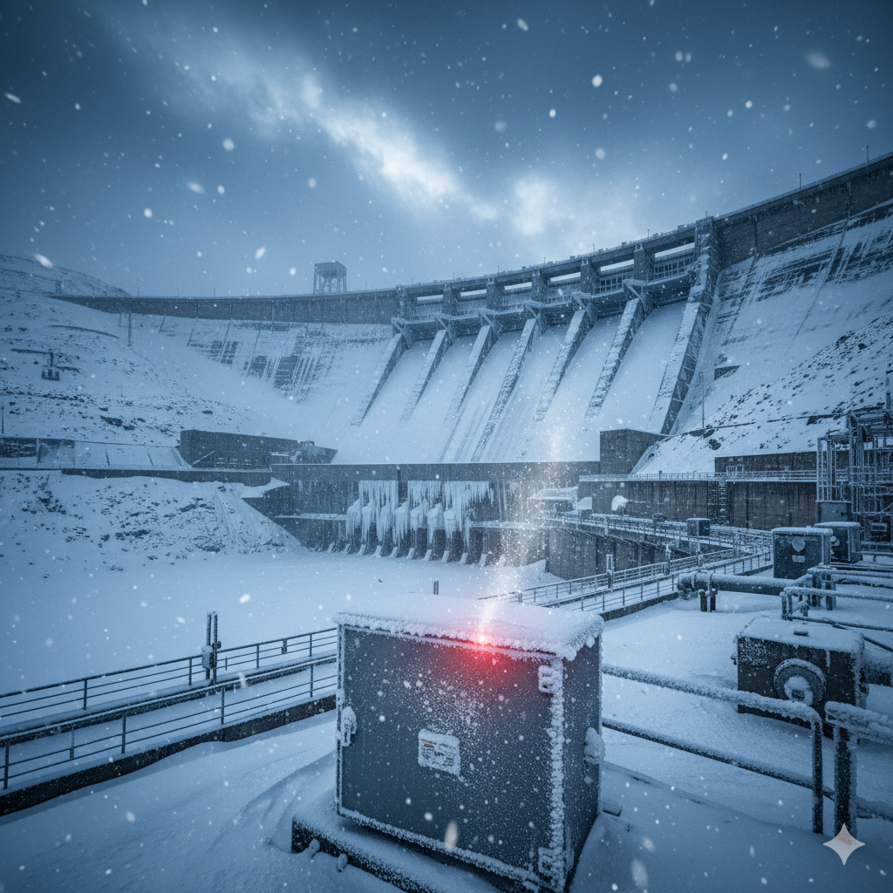

This analysis details the critical Machine-Electrical (M-E) Synergy Gap and explores how often-overlooked electrical instabilities, combined with freezing temperatures, significantly accelerate mechanical stress and component failure in hydropower plants. We move beyond simple maintenance to propose an Integrated Winter Protocol that guarantees operational continuity.
1. The M-E Synergy Gap: Electrical Flaws and Mechanical Stress
Failures in the electrical subsystem—such as poor grounding, inadequate shielding, or faulty automation (SCADA/PLC)—are not isolated problems. They transmit stress directly to the mechanical heart of the turbine. This interaction leads to electro-erosion of bearings and intensified vibrations, often long before winter even begins.
Key Insight: Poor grounding forces current to seek alternate paths, traveling through the shaft and bearings. This creates micro-pitting on the bearing race, dramatically shortening the asset's useful life and increasing the baseline dynamic instability.

2. Cold as a Risk Multiplier: The Winter Challenge
Extreme winter conditions exacerbate these underlying systemic weaknesses, turning minor issues into high-risk scenarios:
- Hydraulic Systems: Cold increases oil viscosity, making startup difficult and leading to overload stress on pumps and motors. This reduces lubrication efficiency.
- Seals and Shaft Alignment: Thermal contraction and expansion disrupt component alignment. This shrinkage can compromise seals, increase friction, and directly contribute to the 48% dynamic risk inherent in the rotating assembly.
- Instrumentation: Freezing condensation can damage sensitive electrical sensors and control circuits, leading to false readings or total loss of monitoring capability.
3. The Immunity Strategy: The Dual Inspection Protocol
Achieving true winter resilience requires an integrated, proactive protocol that targets both mechanical and electrical vulnerabilities before the temperature drops.
Core Components of the M-E Winter Protocol:
- Thermography: Routine infrared scanning of critical electrical points (junction boxes, busbars, connections) to detect overheating caused by inadequate contact or overloading—a precursor to failure.
- Oil Analysis: Advanced testing of lubricating oil to detect contamination, viscosity changes, and the presence of early wear metals (iron, copper) indicative of accelerated bearing erosion.
- Structural Integrity Check: Inspecting anchors and civil structures for freeze-thaw damage that could shift foundational stability and impact alignment.
Secure Your Winter Operations
Protect your assets from winter stress. Download our specialized M-E Winter Protocol checklist to guarantee cold weather readiness.
REQUEST WINTER PROTOCOL